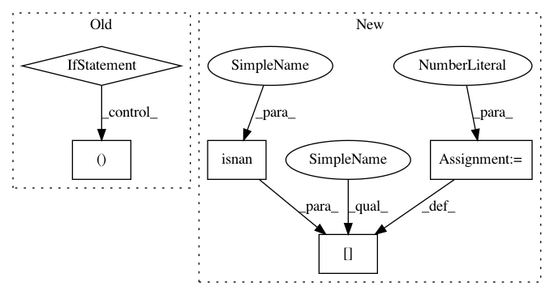

b013b12999b16e11a5b965ae3ac0c9301c6888fa,osmnx/distance.py,,add_edge_lengths,#Any#Any#,105
Before Change
// extract the edges" endpoint nodes" coordinates
try:
coords = (
(u, v, k, G.nodes[u]["y"], G.nodes[u]["x"], G.nodes[v]["y"], G.nodes[v]["x"])
for u, v, k in G.edges
)
except KeyError: // pragma: no cover
raise KeyError("some edges missing nodes, possibly due to input data clipping issue")
After Change
// calculate great circle distances, fill nulls with zeros, then round
dists = great_circle_vec(coords[:, 0], coords[:, 1], coords[:, 2], coords[:, 3])
dists[np.isnan(dists)] = 0
values = zip(uvk, dists.round(precision))
nx.set_edge_attributes(G, values=dict(values), name="length")
utils.log("Added length attributes to graph edges")
In pattern: SUPERPATTERN
Frequency: 3
Non-data size: 5
Instances
Project Name: gboeing/osmnx
Commit Name: b013b12999b16e11a5b965ae3ac0c9301c6888fa
Time: 2021-04-05
Author: boeing@usc.edu
File Name: osmnx/distance.py
Class Name:
Method Name: add_edge_lengths
Project Name: IBM/adversarial-robustness-toolbox
Commit Name: 6a4956e37e6c42c691f7937cf01b47381bd24c83
Time: 2021-03-11
Author: beat.buesser@ie.ibm.com
File Name: art/attacks/evasion/fast_gradient.py
Class Name: FastGradientMethod
Method Name: _apply_perturbation
Project Name: IBM/adversarial-robustness-toolbox
Commit Name: 6a4956e37e6c42c691f7937cf01b47381bd24c83
Time: 2021-03-11
Author: beat.buesser@ie.ibm.com
File Name: art/attacks/evasion/projected_gradient_descent/projected_gradient_descent_pytorch.py
Class Name: ProjectedGradientDescentPyTorch
Method Name: _apply_perturbation